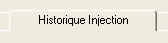
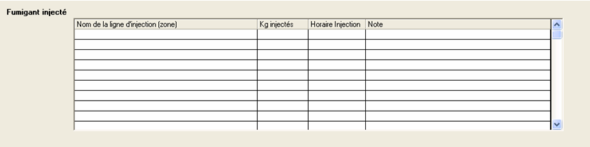
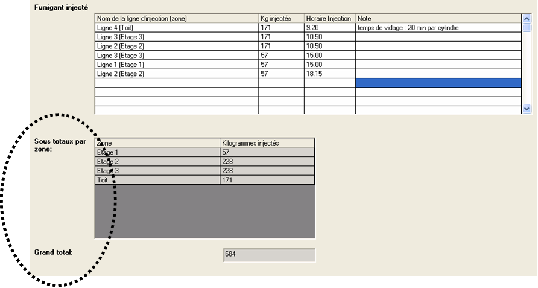
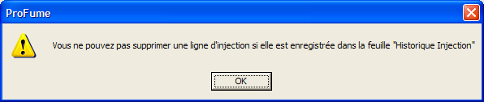
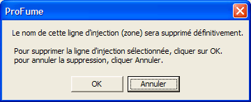

Onglet Historique Injection
Après avoir développé votre Plan de Monitoring, l'onglet
suivant du programme est Historique Injection
.

L'onglet Historique Injection est un emplacement pratique pour enregistrer des quantités de fumigant injectées dans les diverses zones d'une enceinte. Note : Aucun champ de cet onglet n'est nécessaire. Vous trouverez ci-après un exemple de l'onglet Historique injection avant la saisie des données.

Dans l'exemple suivant, le fumigateur a enregistré la date,
l'horaire et les quantités de ProFume injectées par zone. Des notes ont
également été enregistrées par zone. Veuillez noter les Sous totaux par zone et
le Grand Total du bâtiment entourés d'une ligne en pointillés. Ces totaux sont calculés sous l'écran de saisie Fumigant Injecté.

Message d'avertissement lié à l'onglet Historique Injection
Le message suivante s'affiche si un fumigateur tente de supprimer une ligne d'injection établie dans l'onglet Plan d'injection pour laquelle des données sont disponibles.

